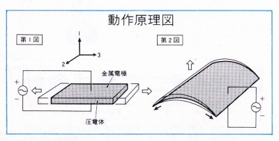
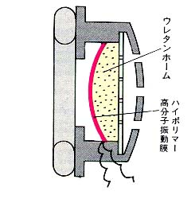
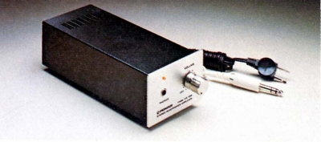
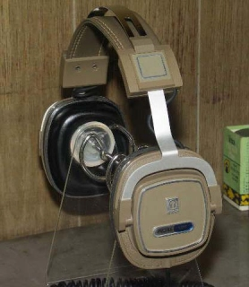
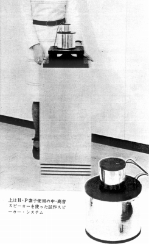
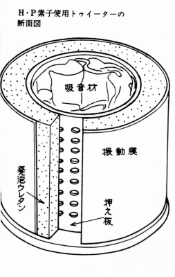
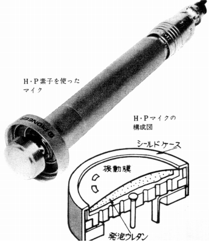
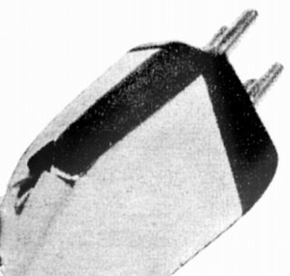

圧電型(ハイポリマー型)について
高分子の膜の両面に交流電圧を加えると、膜が伸びたり縮んだりする現象がおきます。膜を曲面にしておくと、前後の震動になり、音がでるようになります。この原理を利用し、パイオニアが呉羽化学（現 クレハ）と共同研究により開発し、ヘッドフォンにしました。
 
コンデンサー型と同様に、「全面駆動型」の一種となり動的な歪みの少ない方式で、オルソダイナミック型等の動電平面駆動型と同様にアダプターやドライブアンプを必要とせずに直接ヘッドフォンジャックに接続できます。
ただし、コンデンサー型と同様に振動膜の前面と耳の間は密閉状態にしなければならないのでスポンジや布素材のイヤパッドが使えませんし、ドライブするのにヘッドホンアンプの駆動力をかなり要求するのでカセット・デッキ等のヘッドフォンジャックでは音圧が不足したりしたようです。そのためパイオニアではヘッドフォンジャックに接続するタイプのヘッドホン・アンプを用意していました。
（ヘッドフォン・アンプ HA-100 実効出力 ハイポリマー型のとき：10V
ダイナミック型のとき：0.75V）

他社の製品ではKOSS(コス)の1980年代の２ウェイ型ヘッドフォン、PRO/4Xの高域用ユニットに採用されました。
(KOSS PRO/4X)

・ヘッドフォン以外への使用
パイオニアはハイポリマー型の応用範囲として、ヘッドフォン以外にトゥイーター、マイクロフォン、フォノカートリッジなどをあげていました。ヘッドフォン発売前の技術発表段階で試作機が公開されたようですが、実際の製品展開はなかったと思います。


（高音部にハイポリマーを応用した無指向性スピーカーと思われる試作機）


（マイクとカートリッジ。カートリッジでは磁気回路がない優位点を強調していたが・・・）